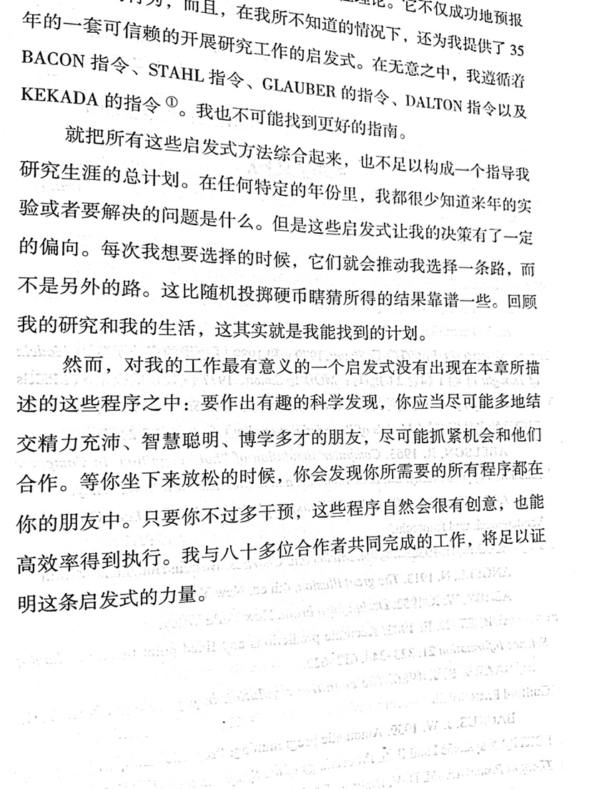
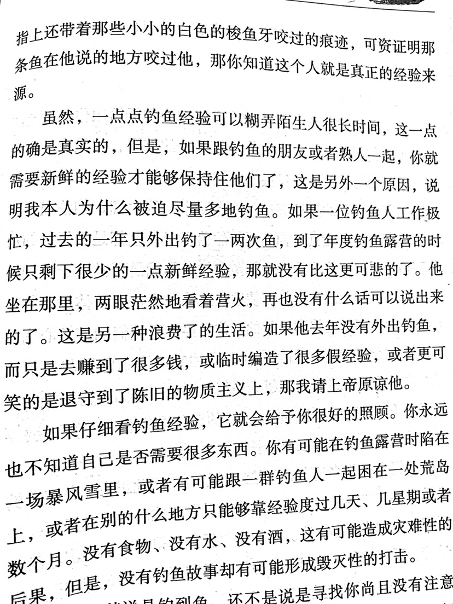

在旷世奇才西蒙眼中，世界就是一座有着多个房间和无数分岔口的城堡。「经过这个花园或者在城堡中移动，在百转千折中经历人生的意外和惊喜。」
对他来说，人生就是一场探索，无尽的迷宫中探索；而对于其中太多太多的杂乱无章的问题，他乐意用启发式搜索，这能给他带来意想不到的结果。

经得住事，事上磨练，对应现代，可以用心流来理解。（待插入心流相关说明）
而通往心流的道路，实践可能路径很多
心理学教授丹内特喜欢钓鱼，一些建议微小但很有趣。仔细想想又可作为人生教义。比如怎么个不浪费生命呢？有点耐心，不断制造/获取新鲜经验。

不管是过一个不浪费的人生，还是想要有个有趣科学发现的创造人生。两位教授的做法，某种意义上，异曲同工。
人生在于体验，不在于种种总结和提炼。 赫伯特.西蒙
记于 20200123 返家途中